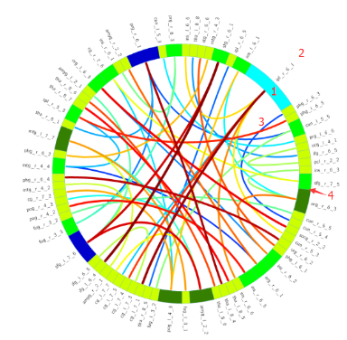

<!DOCTYPE html>
<html lang="zh">
<head><meta name="generator" content="Hexo 3.8.0">
    <meta charset="utf-8">
    
    <title>circos入门教程 | FEI&#39;s Blog</title>
    
    
        <meta name="keywords" content="circos">
    
    <meta name="viewport" content="width=device-width, initial-scale=1, maximum-scale=1">
    <meta name="keywords" content="circos">
<meta property="og:type" content="article">
<meta property="og:title" content="circos入门教程">
<meta property="og:url" content="http://ff120.github.io/hexoblog/2017/01/03/技术/认知神经科学/circos入门教程/index.html">
<meta property="og:site_name" content="FEI&#39;s Blog">
<meta property="og:locale" content="zh-Hans">
<meta property="og:image" content="http://ff120.github.io/hexoblog/2017/01/03/技术/认知神经科学/circos入门教程/circos.png">
<meta property="og:image" content="http://ff120.github.io/hexoblog/2017/01/03/技术/认知神经科学/circos入门教程/example1.png">
<meta property="og:image" content="http://ff120.github.io/hexoblog/2017/01/03/技术/认知神经科学/circos入门教程/StrawberryPerlInstall.png">
<meta property="og:image" content="http://ff120.github.io/hexoblog/2017/01/03/技术/认知神经科学/circos入门教程/StrawberryPerlInstall.png">
<meta property="og:image" content="http://ff120.github.io/hexoblog/2017/01/03/技术/认知神经科学/circos入门教程/cpanCMD.png">
<meta property="og:image" content="http://ff120.github.io/hexoblog/2017/01/03/技术/认知神经科学/circos入门教程/perlcircos.png">
<meta property="og:image" content="http://ff120.github.io/hexoblog/2017/01/03/技术/认知神经科学/circos入门教程/circos_example.png">
<meta property="og:image" content="http://ff120.github.io/hexoblog/2017/01/03/技术/认知神经科学/circos入门教程/example2.png">
<meta property="og:image" content="http://ff120.github.io/hexoblog/2017/01/03/技术/认知神经科学/circos入门教程/ok.png">
<meta property="og:image" content="http://ff120.github.io/hexoblog/2017/01/03/技术/认知神经科学/circos入门教程/aal2.png">
<meta property="og:updated_time" content="2019-03-28T00:54:59.394Z">
<meta name="twitter:card" content="summary">
<meta name="twitter:title" content="circos入门教程">
<meta name="twitter:image" content="http://ff120.github.io/hexoblog/2017/01/03/技术/认知神经科学/circos入门教程/circos.png">
    

    
        <link rel="alternate" href="/atom.xml" title="FEI&#39;s Blog" type="application/atom+xml">
    

    
        <link rel="icon" href="/hexoblog/favicon.ico">
    

    <link rel="stylesheet" href="/hexoblog/libs/font-awesome/css/font-awesome.min.css">
    <link rel="stylesheet" href="/hexoblog/libs/open-sans/styles.css">
    <link rel="stylesheet" href="/hexoblog/libs/source-code-pro/styles.css">

    <link rel="stylesheet" href="/hexoblog/css/style.css">
    <script src="/hexoblog/libs/jquery/2.1.3/jquery.min.js"></script>
    <script src="/hexoblog/libs/jquery/plugins/cookie/1.4.1/jquery.cookie.js"></script>
    
    
        <link rel="stylesheet" href="/hexoblog/libs/lightgallery/css/lightgallery.min.css">
    
    
        <link rel="stylesheet" href="/hexoblog/libs/justified-gallery/justifiedGallery.min.css">
    
    
    
    


    
        <script async src="//busuanzi.ibruce.info/busuanzi/2.3/busuanzi.pure.mini.js"></script>
    
</head>
</html>
<body>
    <div id="container">
        <header id="header">
    <div id="header-main" class="header-inner">
        <div class="outer">
            <a href="/hexoblog/" id="logo">
                <i class="logo"></i>
                <span class="site-title">FEI&#39;s Blog</span>
            </a>
            <nav id="main-nav">
                
                    <a class="main-nav-link" href="/hexoblog/">首页</a>
                
                    <a class="main-nav-link" href="/hexoblog/archives">归档</a>
                
                    <a class="main-nav-link" href="/hexoblog/categories">分类</a>
                
                    <a class="main-nav-link" href="/hexoblog/tags">标签</a>
                
                    <a class="main-nav-link" href="/hexoblog/about">关于</a>
                
            </nav>
            
            <div id="search-form-wrap">

    <form class="search-form">
        <input type="text" class="ins-search-input search-form-input" placeholder="Rechercher">
        <button type="submit" class="search-form-submit"></button>
    </form>
    <div class="ins-search">
    <div class="ins-search-mask"></div>
    <div class="ins-search-container">
        <div class="ins-input-wrapper">
            <input type="text" class="ins-search-input" placeholder="Type something...">
            <span class="ins-close ins-selectable"><i class="fa fa-times-circle"></i></span>
        </div>
        <div class="ins-section-wrapper">
            <div class="ins-section-container"></div>
        </div>
    </div>
</div>
<script>
(function (window) {
    var INSIGHT_CONFIG = {
        TRANSLATION: {
            POSTS: 'Articles',
            PAGES: 'Pages',
            CATEGORIES: 'Catégories',
            TAGS: 'Tags',
            UNTITLED: '(Untitled)',
        },
        ROOT_URL: '/hexoblog/',
        CONTENT_URL: '/hexoblog/content.json',
    };
    window.INSIGHT_CONFIG = INSIGHT_CONFIG;
})(window);
</script>
<script src="/hexoblog/js/insight.js"></script>

</div>
        </div>
    </div>
    <div id="main-nav-mobile" class="header-sub header-inner">
        <table class="menu outer">
            <tr>
                
                    <td><a class="main-nav-link" href="/hexoblog/">首页</a></td>
                
                    <td><a class="main-nav-link" href="/hexoblog/archives">归档</a></td>
                
                    <td><a class="main-nav-link" href="/hexoblog/categories">分类</a></td>
                
                    <td><a class="main-nav-link" href="/hexoblog/tags">标签</a></td>
                
                    <td><a class="main-nav-link" href="/hexoblog/about">关于</a></td>
                
                <td>
                    
    <div class="search-form">
        <input type="text" class="ins-search-input search-form-input" placeholder="Rechercher">
    </div>

                </td>
            </tr>
        </table>
    </div>
</header>

        <div class="outer">
            
            
                <aside id="sidebar">
   
        
    <div class="widget-wrap" id="categories">
        <h3 class="widget-title">
            <span>Catégories</span>
            &nbsp;
            <a id="allExpand" href="#">
                <i class="fa fa-angle-double-down fa-2x"></i>
            </a>
        </h3>
        
        
        
         <ul class="unstyled" id="tree"> 
                    <li class="directory">
                        <a href="#" data-role="directory">
                            <i class="fa fa-folder"></i>
                            &nbsp;
                            心理学
                        </a>
                         <ul class="unstyled" id="tree"> 
                    <li class="directory">
                        <a href="#" data-role="directory">
                            <i class="fa fa-folder"></i>
                            &nbsp;
                            记忆魔法
                        </a>
                         <ul class="unstyled" id="tree">  <li class="file"><a href="/hexoblog/2019/04/03/心理学/记忆魔法/代码记忆法/">代码记忆法</a></li>  </ul> 
                    </li> 
                     </ul> 
                    </li> 
                    
                    <li class="directory open">
                        <a href="#" data-role="directory">
                            <i class="fa fa-folder-open"></i>
                            &nbsp;
                            技术
                        </a>
                         <ul class="unstyled" id="tree"> 
                    <li class="directory">
                        <a href="#" data-role="directory">
                            <i class="fa fa-folder"></i>
                            &nbsp;
                            Web开发
                        </a>
                         <ul class="unstyled" id="tree">  <li class="file"><a href="/hexoblog/2016/06/11/技术/Web开发/后台开发_How-to-install-Laravel-framework/">How to install Laravel framework</a></li>  <li class="file"><a href="/hexoblog/2016/06/11/技术/Web开发/后台开发_laravel-4-note-01/">laravel 4 note 01</a></li>  <li class="file"><a href="/hexoblog/2016/06/11/技术/Web开发/后台开发_Make-phpStorm-friendly-to-laravel/">Make phpStorm friendly to laravel</a></li>  <li class="file"><a href="/hexoblog/2016/06/11/技术/Web开发/后台开发_sublime-Text-tricks/">sublime Text tricks</a></li>  <li class="file"><a href="/hexoblog/2016/06/11/技术/Web开发/后台开发_think-php-note-01/">think php note 01</a></li>  <li class="file"><a href="/hexoblog/2016/06/11/技术/Web开发/后台开发_think-php-note-02/">think php note 02</a></li>  <li class="file"><a href="/hexoblog/2016/06/11/技术/Web开发/后台开发_think-php-note-03/">think php note 03</a></li>  <li class="file"><a href="/hexoblog/2016/06/11/技术/Web开发/后台开发_PHP编译less文件-lessphp的使用/">PHP编译less文件-lessphp的使用</a></li>  <li class="file"><a href="/hexoblog/2016/06/11/技术/Web开发/后台开发_Lavarel-后台组件frozenode的使用/">Lavarel 后台组件frozenode的使用</a></li>  <li class="file"><a href="/hexoblog/2016/06/11/技术/Web开发/后台开发_Linux常用命令/">Linux常用命令</a></li>  <li class="file"><a href="/hexoblog/2016/06/11/技术/Web开发/后台开发_Linux主机之间同步文件/">Linux主机之间同步文件</a></li>  <li class="file"><a href="/hexoblog/2016/06/11/技术/Web开发/后台开发_PHP基本操作/">PHP基本操作</a></li>  <li class="file"><a href="/hexoblog/2016/06/11/技术/Web开发/后台开发_短信验证码的实现/">短信验证码的实现</a></li>  <li class="file"><a href="/hexoblog/2016/06/11/技术/Web开发/后台开发_配置Apache支持使用HTTPS/">配置Apache支持使用HTTPS</a></li>  <li class="file"><a href="/hexoblog/2016/06/11/技术/Web开发/测试_使用Selenium测试UI/">测试_使用Selenium测试UI</a></li>  <li class="file"><a href="/hexoblog/2016/06/11/技术/Web开发/后台开发_PhpStorm常用快捷键/">PhpStorm常用快捷键</a></li>  <li class="file"><a href="/hexoblog/2016/06/11/技术/Web开发/微信开发_微信发送消息PHP-SDK/">微信发送消息PHP SDK</a></li>  <li class="file"><a href="/hexoblog/2016/06/11/技术/Web开发/微信开发_获取地理位置/">微信获取地理位置 </a></li>  <li class="file"><a href="/hexoblog/2016/06/11/技术/Web开发/微信开发_发送模板消息的代码/">微信发送模板消息的代码</a></li>  <li class="file"><a href="/hexoblog/2016/06/11/技术/Web开发/测试_Selenium-定位元素的几种方式/">测试_Selenium定位元素的几种方式</a></li>  <li class="file"><a href="/hexoblog/2016/06/11/技术/Web开发/测试_Selenium-Action/">测试_Selenium Action</a></li>  <li class="file"><a href="/hexoblog/2016/06/11/技术/Web开发/测试_Apache-JMeter的使用/">测试_Apache JMeter的使用</a></li>  <li class="file"><a href="/hexoblog/2016/06/12/技术/Web开发/后台开发_Apache-配置虚拟主机/">Apache 配置虚拟主机</a></li>  <li class="file"><a href="/hexoblog/2016/06/23/技术/Web开发/后台开发_改进PHP的var-dump-方法使之适应显示从数据库中查出来的数据/">改进PHP的var_dump()方法使之适应显示从数据库中查出来的数据</a></li>  <li class="file"><a href="/hexoblog/2016/06/23/技术/Web开发/后台开发_PHP读写XLS/">PHP读写XLS</a></li>  <li class="file"><a href="/hexoblog/2016/06/30/技术/Web开发/前端_jQuery-EasyUI-学习笔记/">JQuery EasyUI 学习笔记</a></li>  <li class="file"><a href="/hexoblog/2016/06/30/技术/Web开发/前端_bootsharp学习笔记/">Bootsharp学习笔记</a></li>  </ul> 
                    </li> 
                    
                    <li class="directory">
                        <a href="#" data-role="directory">
                            <i class="fa fa-folder"></i>
                            &nbsp;
                            专业术语
                        </a>
                         <ul class="unstyled" id="tree">  <li class="file"><a href="/hexoblog/2017/07/24/技术/专业术语/术语/">英语</a></li>  </ul> 
                    </li> 
                    
                    <li class="directory">
                        <a href="#" data-role="directory">
                            <i class="fa fa-folder"></i>
                            &nbsp;
                            大数据
                        </a>
                         <ul class="unstyled" id="tree">  <li class="file"><a href="/hexoblog/2016/06/23/技术/大数据/大数据_Spark环境下的Kmeans-Python实现/">Spark环境下的Kmeans-Python实现</a></li>  <li class="file"><a href="/hexoblog/2017/10/06/技术/大数据/大数据基础框架/">大数据基础框架</a></li>  </ul> 
                    </li> 
                    
                    <li class="directory">
                        <a href="#" data-role="directory">
                            <i class="fa fa-folder"></i>
                            &nbsp;
                            工具
                        </a>
                         <ul class="unstyled" id="tree"> 
                    <li class="directory">
                        <a href="#" data-role="directory">
                            <i class="fa fa-folder"></i>
                            &nbsp;
                            AutoHotKey
                        </a>
                         <ul class="unstyled" id="tree">  <li class="file"><a href="/hexoblog/2018/12/02/技术/工具/AutoHotKey/AutoHotKey非常有用的脚本/">AutoHotKey非常有用的脚本</a></li>  </ul> 
                    </li> 
                    
                    <li class="directory">
                        <a href="#" data-role="directory">
                            <i class="fa fa-folder"></i>
                            &nbsp;
                            Git
                        </a>
                         <ul class="unstyled" id="tree">  <li class="file"><a href="/hexoblog/2017/05/04/技术/工具/Git/GIT的使用01-基本功能/">GIT的使用01-基本功能</a></li>  <li class="file"><a href="/hexoblog/2018/07/29/技术/工具/Git/Git查询手册/">Git 手册</a></li>  </ul> 
                    </li> 
                    
                    <li class="directory">
                        <a href="#" data-role="directory">
                            <i class="fa fa-folder"></i>
                            &nbsp;
                            Hexo
                        </a>
                         <ul class="unstyled" id="tree">  <li class="file"><a href="/hexoblog/2016/06/12/技术/工具/Hexo/Hexo的使用02-同步/">Hexo的使用02-同步</a></li>  <li class="file"><a href="/hexoblog/2016/06/13/技术/工具/Hexo/Hexo的使用01-搭建/">Hexo的使用01-搭建</a></li>  <li class="file"><a href="/hexoblog/2017/04/12/技术/工具/Hexo/Hexo的使用05-Atom编辑器/">Hexo的使用05-Atom编辑器</a></li>  <li class="file"><a href="/hexoblog/2017/04/12/技术/工具/Hexo/Hexo的使用04-数学公式/">Hexo的使用04-数学公式</a></li>  <li class="file"><a href="/hexoblog/2017/05/05/技术/工具/Hexo/Hexo的使用03-迁移/">Hexo的使用03-迁移</a></li>  <li class="file"><a href="/hexoblog/2017/07/17/技术/工具/Hexo/Hexo的使用06-使用gist存储代码片段/">Hexo中使用gist存储代码片段</a></li>  </ul> 
                    </li> 
                    
                    <li class="directory">
                        <a href="#" data-role="directory">
                            <i class="fa fa-folder"></i>
                            &nbsp;
                            Visio
                        </a>
                         <ul class="unstyled" id="tree">  <li class="file"><a href="/hexoblog/2017/05/05/技术/工具/Visio/VISIO的使用01-基础入门/">VISIO的使用01-基础入门</a></li>  </ul> 
                    </li> 
                    
                    <li class="directory">
                        <a href="#" data-role="directory">
                            <i class="fa fa-folder"></i>
                            &nbsp;
                            图片处理
                        </a>
                         <ul class="unstyled" id="tree">  <li class="file"><a href="/hexoblog/2017/05/05/技术/工具/图片处理/图片处理02-一寸照片/">图片处理02-一寸照片</a></li>  <li class="file"><a href="/hexoblog/2017/05/17/技术/工具/图片处理/图片处理01-合并多张图片/">图片处理01-合并多张图片</a></li>  </ul> 
                    </li> 
                    
                    <li class="directory">
                        <a href="#" data-role="directory">
                            <i class="fa fa-folder"></i>
                            &nbsp;
                            正则表达式
                        </a>
                         <ul class="unstyled" id="tree">  <li class="file"><a href="/hexoblog/2018/07/29/技术/工具/正则表达式/正则表达式/">正则表达式</a></li>  </ul> 
                    </li> 
                    
                    <li class="directory">
                        <a href="#" data-role="directory">
                            <i class="fa fa-folder"></i>
                            &nbsp;
                            编程IDE
                        </a>
                         <ul class="unstyled" id="tree"> 
                    <li class="directory">
                        <a href="#" data-role="directory">
                            <i class="fa fa-folder"></i>
                            &nbsp;
                            Anaconda
                        </a>
                         <ul class="unstyled" id="tree">  <li class="file"><a href="/hexoblog/2017/04/18/技术/工具/编程IDE/Anaconda/Anaconda的使用01-基础/">Anaconda的使用01-基础</a></li>  </ul> 
                    </li> 
                    
                    <li class="directory">
                        <a href="#" data-role="directory">
                            <i class="fa fa-folder"></i>
                            &nbsp;
                            JetBrainsCLion
                        </a>
                         <ul class="unstyled" id="tree">  <li class="file"><a href="/hexoblog/2017/05/04/技术/工具/编程IDE/JetBrainsCLion/JetBrainsCLion的使用01-入门/">JetBrainsCLion的使用01-入门</a></li>  </ul> 
                    </li> 
                    
                    <li class="directory">
                        <a href="#" data-role="directory">
                            <i class="fa fa-folder"></i>
                            &nbsp;
                            VSCode
                        </a>
                         <ul class="unstyled" id="tree">  <li class="file"><a href="/hexoblog/2017/07/24/技术/工具/编程IDE/VSCode/Visual-Studio-Code使用技巧/">Visual Studio Code使用技巧</a></li>  </ul> 
                    </li> 
                     </ul> 
                    </li> 
                    
                    <li class="directory">
                        <a href="#" data-role="directory">
                            <i class="fa fa-folder"></i>
                            &nbsp;
                            网络软件
                        </a>
                         <ul class="unstyled" id="tree">  <li class="file"><a href="/hexoblog/2016/06/12/技术/工具/网络软件/Windows全局代理软件Proxifier/">Windows全局代理软件Proxifier</a></li>  <li class="file"><a href="/hexoblog/2016/06/12/技术/工具/网络软件/Windows手工修改路由表/">Windows手工修改路由表</a></li>  </ul> 
                    </li> 
                     </ul> 
                    </li> 
                    
                    <li class="directory">
                        <a href="#" data-role="directory">
                            <i class="fa fa-folder"></i>
                            &nbsp;
                            数据库
                        </a>
                         <ul class="unstyled" id="tree">  <li class="file"><a href="/hexoblog/2016/06/11/技术/数据库/数据库_Redis入门/">Redis入门</a></li>  <li class="file"><a href="/hexoblog/2016/06/12/技术/数据库/数据库_使用Database-Configuration-Assist-工具创建oracle数据库/">使用Database Configuration Assist 工具创建oracle数据库</a></li>  <li class="file"><a href="/hexoblog/2017/11/02/技术/数据库/SQL/">SQL</a></li>  </ul> 
                    </li> 
                    
                    <li class="directory">
                        <a href="#" data-role="directory">
                            <i class="fa fa-folder"></i>
                            &nbsp;
                            数据结构和算法
                        </a>
                         <ul class="unstyled" id="tree">  <li class="file"><a href="/hexoblog/2017/03/21/技术/数据结构和算法/算法专题_二维数组/">算法专题_二维数组</a></li>  <li class="file"><a href="/hexoblog/2017/03/21/技术/数据结构和算法/算法专题_矩阵和图/">矩阵和用矩阵表示的图的相关问题</a></li>  <li class="file"><a href="/hexoblog/2017/03/21/技术/数据结构和算法/算法专题_位运算/">算法专题_位运算</a></li>  <li class="file"><a href="/hexoblog/2017/03/23/技术/数据结构和算法/算法专题_链表/">算法专题_链表</a></li>  <li class="file"><a href="/hexoblog/2017/04/05/技术/数据结构和算法/算法专题_动态规划/">算法专题_动态规划</a></li>  <li class="file"><a href="/hexoblog/2017/04/06/技术/数据结构和算法/算法专题_图/">算法专题_图问题</a></li>  <li class="file"><a href="/hexoblog/2017/04/08/技术/数据结构和算法/做过的算法题汇总表/">做过的算法题汇总表</a></li>  <li class="file"><a href="/hexoblog/2017/04/09/技术/数据结构和算法/算法专题_二叉树/">算法专题_二叉树</a></li>  <li class="file"><a href="/hexoblog/2017/04/09/技术/数据结构和算法/算法专题_通用树结构/">算法专题_通用树结构</a></li>  <li class="file"><a href="/hexoblog/2017/04/10/技术/数据结构和算法/算法专题_大数据和空间限制/">算法专题_大数据和空间限制</a></li>  <li class="file"><a href="/hexoblog/2017/04/10/技术/数据结构和算法/算法专题_排列组合/">算法专题_排列组合</a></li>  <li class="file"><a href="/hexoblog/2017/04/11/技术/数据结构和算法/本地代码集锦/">本地代码集锦</a></li>  <li class="file"><a href="/hexoblog/2017/04/12/技术/数据结构和算法/算法专题_栈和队列/">算法专题_栈和队列</a></li>  <li class="file"><a href="/hexoblog/2017/04/16/技术/数据结构和算法/算法专题_排序算法/">算法专题_排序算法</a></li>  <li class="file"><a href="/hexoblog/2017/04/17/技术/数据结构和算法/算法专题_算法总结/">算法专题_算法总结</a></li>  <li class="file"><a href="/hexoblog/2017/05/02/技术/数据结构和算法/算法专题_一维数组/">算法专题_一维数组</a></li>  <li class="file"><a href="/hexoblog/2017/05/05/技术/数据结构和算法/算法专题_图之网络流/">算法专题_图之网络流</a></li>  <li class="file"><a href="/hexoblog/2017/05/06/技术/数据结构和算法/算法专题_图之最短路径/">算法专题_图之最短路径</a></li>  <li class="file"><a href="/hexoblog/2017/05/06/技术/数据结构和算法/算法专题_最小生成树/">算法专题_最小生成树</a></li>  <li class="file"><a href="/hexoblog/2017/05/06/技术/数据结构和算法/算法专题_霍夫曼编码/">算法专题_霍夫曼编码(哈夫曼编码)</a></li>  <li class="file"><a href="/hexoblog/2017/05/07/技术/数据结构和算法/Kickstart-Round-B-2017/">Kickstart Round B 2017</a></li>  <li class="file"><a href="/hexoblog/2017/05/08/技术/数据结构和算法/算法专题_模运算/">算法专题_模运算</a></li>  <li class="file"><a href="/hexoblog/2017/05/09/技术/数据结构和算法/算法专题_素数问题/">算法专题_素数问题</a></li>  <li class="file"><a href="/hexoblog/2017/05/11/技术/数据结构和算法/算法专题_计算几何/">算法专题_计算几何</a></li>  <li class="file"><a href="/hexoblog/2017/05/27/技术/数据结构和算法/计蒜之道2017程序设计大赛/">计蒜之道2017程序设计大赛</a></li>  <li class="file"><a href="/hexoblog/2017/05/28/技术/数据结构和算法/算法专题_字符串匹配/">算法专题_字符串匹配</a></li>  <li class="file"><a href="/hexoblog/2017/07/12/技术/数据结构和算法/四等分数组/">四等分数组</a></li>  <li class="file"><a href="/hexoblog/2017/07/12/技术/数据结构和算法/矩阵的遍历/">矩阵的遍历</a></li>  <li class="file"><a href="/hexoblog/2017/07/20/技术/数据结构和算法/N皇后问题/">N皇后问题</a></li>  <li class="file"><a href="/hexoblog/2017/07/23/技术/数据结构和算法/算法专题_线段树/">算法专题_线段树</a></li>  <li class="file"><a href="/hexoblog/2017/07/23/技术/数据结构和算法/算法专题_树状数组/">算法专题_树状数组</a></li>  <li class="file"><a href="/hexoblog/2017/07/23/技术/数据结构和算法/算法专题_并查集/">算法专题_并查集</a></li>  <li class="file"><a href="/hexoblog/2017/07/26/技术/数据结构和算法/算法专题_链表2/">算法专题_链表2</a></li>  <li class="file"><a href="/hexoblog/2017/08/06/技术/数据结构和算法/算法专题_二叉堆/">算法专题_二叉堆</a></li>  <li class="file"><a href="/hexoblog/2017/08/07/技术/数据结构和算法/算法专题_快速排序/">算法专题_快速排序</a></li>  <li class="file"><a href="/hexoblog/2017/08/07/技术/数据结构和算法/算法专题_归并排序/">算法专题_归并排序</a></li>  <li class="file"><a href="/hexoblog/2017/08/13/技术/数据结构和算法/算法专题-hihocoder/">算法专题_hihocoder</a></li>  <li class="file"><a href="/hexoblog/2017/08/17/技术/数据结构和算法/算法专题-贪心法/">算法专题_贪心法</a></li>  <li class="file"><a href="/hexoblog/2017/08/18/技术/数据结构和算法/阿里在线测评-兔子繁殖问题/">阿里笔试</a></li>  <li class="file"><a href="/hexoblog/2017/08/22/技术/数据结构和算法/今日头条-在线编程题/">今日头条_在线编程题</a></li>  <li class="file"><a href="/hexoblog/2017/08/23/技术/数据结构和算法/算法专题-字典树-Trie树/">算法专题_字典树(Trie树)</a></li>  <li class="file"><a href="/hexoblog/2017/09/23/技术/数据结构和算法/算法专题_二叉树2/">算法专题_二叉树2</a></li>  <li class="file"><a href="/hexoblog/2017/09/27/技术/数据结构和算法/手写代码-其他/">手写代码-其他</a></li>  <li class="file"><a href="/hexoblog/2017/10/03/技术/数据结构和算法/算法专题-常见题目/">算法专题_常见题目</a></li>  </ul> 
                    </li> 
                    
                    <li class="directory">
                        <a href="#" data-role="directory">
                            <i class="fa fa-folder"></i>
                            &nbsp;
                            机器学习
                        </a>
                         <ul class="unstyled" id="tree"> 
                    <li class="directory">
                        <a href="#" data-role="directory">
                            <i class="fa fa-folder"></i>
                            &nbsp;
                            深度学习
                        </a>
                         <ul class="unstyled" id="tree">  <li class="file"><a href="/hexoblog/2017/03/22/技术/机器学习/深度学习/深度学习_Theano使用技巧/">深度学习_Theano使用技巧</a></li>  <li class="file"><a href="/hexoblog/2017/04/18/技术/机器学习/深度学习/深度学习_基本概念/">深度学习_基本概念</a></li>  <li class="file"><a href="/hexoblog/2017/04/18/技术/机器学习/深度学习/深度学习_利用神经网络识别手写数字/">深度学习__利用神经网络识别手写数字</a></li>  <li class="file"><a href="/hexoblog/2017/04/19/技术/机器学习/深度学习/深度学习_反向传播算法及简单实例/">深度学习_反向传播算法及简单实例</a></li>  <li class="file"><a href="/hexoblog/2017/04/19/技术/机器学习/深度学习/深度学习_Keras使用技巧/">深度学习_Keras使用技巧</a></li>  <li class="file"><a href="/hexoblog/2017/04/20/技术/机器学习/深度学习/深度学习_使用keras实现autoencoder/">深度学习_使用keras实现autoencoder</a></li>  <li class="file"><a href="/hexoblog/2017/04/20/技术/机器学习/深度学习/深度学习_卷积神经网络/">深度学习_卷积神经网络</a></li>  <li class="file"><a href="/hexoblog/2017/04/27/技术/机器学习/深度学习/深度学习_使用autoencoder自动提取特征/">深度学习_使用autoencoder自动提取特征</a></li>  <li class="file"><a href="/hexoblog/2017/05/10/技术/机器学习/深度学习/深度学习_递归神经网络(RNN)/">深度学习_递归神经网络(RNN)</a></li>  <li class="file"><a href="/hexoblog/2017/05/10/技术/机器学习/深度学习/深度学习_限制波尔茨曼向量机(RBM)/">深度学习_限制波尔茨曼向量机(RBM)</a></li>  <li class="file"><a href="/hexoblog/2017/05/12/技术/机器学习/深度学习/深度学习_TensorFlow使用技巧/">深度学习_TensorFlow使用技巧</a></li>  </ul> 
                    </li> 
                     <li class="file"><a href="/hexoblog/2016/06/16/技术/机器学习/机器学习_Scikit-Learn-ManyClassifier/">同时使用多个分类器(Scikit-Learn)</a></li>  <li class="file"><a href="/hexoblog/2016/06/16/技术/机器学习/机器学习_范数/">机器学习_范数</a></li>  <li class="file"><a href="/hexoblog/2016/06/20/技术/机器学习/机器学习_学习路线/">机器学习_学习路线</a></li>  <li class="file"><a href="/hexoblog/2016/06/20/技术/机器学习/机器学习_手写数字识别/">机器学习_手写数字识别</a></li>  <li class="file"><a href="/hexoblog/2016/07/11/技术/机器学习/机器学习_Matplolib使用技巧/">机器学习_Matplolib使用技巧</a></li>  <li class="file"><a href="/hexoblog/2017/03/22/技术/机器学习/机器学习_人脸识别/">机器学习_人脸识别</a></li>  <li class="file"><a href="/hexoblog/2017/05/04/技术/机器学习/机器学习_Matlab使用技巧/">机器学习_Matlab使用技巧</a></li>  <li class="file"><a href="/hexoblog/2017/05/11/技术/机器学习/机器学习_时间序列预测分析算法/">机器学习_时间序列预测分析算法</a></li>  <li class="file"><a href="/hexoblog/2017/05/14/技术/机器学习/机器学习_Scikit-Learn使用技巧/">深度学习_Scikit-Learn机器学习算法的使用</a></li>  <li class="file"><a href="/hexoblog/2017/05/15/技术/机器学习/机器学习_时间序列预测の广告效果预测/">机器学习_时间序列预测の广告效果预测</a></li>  <li class="file"><a href="/hexoblog/2017/05/15/技术/机器学习/机器学习_算法汇总/">机器学习_算法汇总</a></li>  <li class="file"><a href="/hexoblog/2017/05/17/技术/机器学习/机器学习_Pandas使用技巧/">深度学习_Pandas使用技巧</a></li>  <li class="file"><a href="/hexoblog/2017/05/19/技术/机器学习/机器学习_感知机/">机器学习_感知机</a></li>  <li class="file"><a href="/hexoblog/2017/05/19/技术/机器学习/机器学习_逻辑回归/">机器学习_逻辑回归</a></li>  <li class="file"><a href="/hexoblog/2017/05/22/技术/机器学习/机器学习_损失函数/">机器学习_损失函数</a></li>  <li class="file"><a href="/hexoblog/2017/06/03/技术/机器学习/机器学习_分类器性能的度量/">机器学习_分类器性能的度量</a></li>  <li class="file"><a href="/hexoblog/2017/06/15/技术/机器学习/机器学习_Scipy使用技巧/">机器学习_Scipy使用技巧</a></li>  <li class="file"><a href="/hexoblog/2017/06/15/技术/机器学习/机器学习_Python使用技巧/">深度学习_Python使用技巧</a></li>  <li class="file"><a href="/hexoblog/2017/07/23/技术/机器学习/机器学习-Numpy使用技巧/">机器学习_Numpy使用技巧</a></li>  <li class="file"><a href="/hexoblog/2017/10/15/技术/机器学习/KNN-with-C/">KNN with C++</a></li>  <li class="file"><a href="/hexoblog/2017/11/04/技术/机器学习/机器学习-绪论-基本概念/">机器学习-绪论-基本概念</a></li>  <li class="file"><a href="/hexoblog/2017/11/04/技术/机器学习/机器学习-第一章-逻辑回归/">机器学习-第一章-逻辑回归</a></li>  <li class="file"><a href="/hexoblog/2017/11/04/技术/机器学习/机器学习-第二章-决策树/">机器学习-第二章-决策树</a></li>  <li class="file"><a href="/hexoblog/2017/11/04/技术/机器学习/机器学习-第三章-朴素贝叶斯/">机器学习-第三章-朴素贝叶斯</a></li>  <li class="file"><a href="/hexoblog/2017/11/04/技术/机器学习/机器学习-第四章-支持向量机/">机器学习-第四章-支持向量机</a></li>  <li class="file"><a href="/hexoblog/2017/11/04/技术/机器学习/机器学习-第五章-最近邻/">机器学习-第五章-最近邻</a></li>  <li class="file"><a href="/hexoblog/2017/11/04/技术/机器学习/机器学习-第六章-kmeans/">机器学习-第六章-kmeans</a></li>  <li class="file"><a href="/hexoblog/2017/11/04/技术/机器学习/机器学习-第七章-感知机/">机器学习-第七章-感知机</a></li>  </ul> 
                    </li> 
                    
                    <li class="directory">
                        <a href="#" data-role="directory">
                            <i class="fa fa-folder"></i>
                            &nbsp;
                            编程语言
                        </a>
                         <ul class="unstyled" id="tree"> 
                    <li class="directory">
                        <a href="#" data-role="directory">
                            <i class="fa fa-folder"></i>
                            &nbsp;
                            C++
                        </a>
                         <ul class="unstyled" id="tree">  <li class="file"><a href="/hexoblog/2017/04/07/技术/编程语言/C++/C++语言技巧/">C++语言技巧</a></li>  </ul> 
                    </li> 
                     </ul> 
                    </li> 
                    
                    <li class="directory">
                        <a href="#" data-role="directory">
                            <i class="fa fa-folder"></i>
                            &nbsp;
                            计算机基础
                        </a>
                         <ul class="unstyled" id="tree"> 
                    <li class="directory">
                        <a href="#" data-role="directory">
                            <i class="fa fa-folder"></i>
                            &nbsp;
                            计算机网络
                        </a>
                         <ul class="unstyled" id="tree">  <li class="file"><a href="/hexoblog/2016/06/12/技术/计算机基础/计算机网络/网络_校园网多终端上网方案/">校园网多终端上网方案</a></li>  <li class="file"><a href="/hexoblog/2017/07/12/技术/计算机基础/计算机网络/计算机网络/">计算机网络</a></li>  </ul> 
                    </li> 
                     </ul> 
                    </li> 
                    
                    <li class="directory open">
                        <a href="#" data-role="directory">
                            <i class="fa fa-folder-open"></i>
                            &nbsp;
                            认知神经科学
                        </a>
                         <ul class="unstyled" id="tree">  <li class="file"><a href="/hexoblog/2016/06/12/技术/认知神经科学/文献检索方法/">文献检索方法</a></li>  <li class="file"><a href="/hexoblog/2016/06/12/技术/认知神经科学/参考文献书写格式/">参考文献书写格式</a></li>  <li class="file"><a href="/hexoblog/2016/06/12/技术/认知神经科学/使用Python处理fMRI数据/">使用Python处理fMRI数据</a></li>  <li class="file"><a href="/hexoblog/2016/06/22/技术/认知神经科学/中英文对照/">中英文对照</a></li>  <li class="file active"><a href="/hexoblog/2017/01/03/技术/认知神经科学/circos入门教程/">circos入门教程</a></li>  <li class="file"><a href="/hexoblog/2017/03/08/技术/认知神经科学/基于视频的车牌识别和流量统计/">基于视频的车牌识别和流量统计</a></li>  <li class="file"><a href="/hexoblog/2017/03/08/技术/认知神经科学/基于贝叶斯网络和隐性知识的AU识别研究/">基于贝叶斯网络和隐性知识的AU识别研究</a></li>  <li class="file"><a href="/hexoblog/2017/03/09/技术/认知神经科学/基于连接的脑信息解码研究/">基于连接信息的脑信息解码研究</a></li>  <li class="file"><a href="/hexoblog/2017/03/09/技术/认知神经科学/认知神经科学系列目录/">认知神经科学系列目录</a></li>  <li class="file"><a href="/hexoblog/2017/03/20/技术/认知神经科学/多被试多RUN批量预处理(SPM)/">多被试多RUN批量预处理(SPM)</a></li>  <li class="file"><a href="/hexoblog/2017/03/20/技术/认知神经科学/SPM预处理中的常用操作/">SPM预处理中的常用操作</a></li>  <li class="file"><a href="/hexoblog/2017/03/20/技术/认知神经科学/动态因果模型(DCM)的批量定义和估计/">动态因果模型(DCM)的批量定义和估计</a></li>  <li class="file"><a href="/hexoblog/2017/04/13/技术/认知神经科学/使用SPM做Second-Level分析/">使用SPM做Second_Level分析</a></li>  <li class="file"><a href="/hexoblog/2017/04/13/技术/认知神经科学/DCM模型的定义和估计/">DCM模型的定义和估计</a></li>  <li class="file"><a href="/hexoblog/2017/04/14/技术/认知神经科学/XJVIEW的使用技巧/">XJVIEW的使用技巧</a></li>  <li class="file"><a href="/hexoblog/2017/04/14/技术/认知神经科学/SPM中函数的修改和使用/">SPM中函数的修改和使用</a></li>  <li class="file"><a href="/hexoblog/2017/05/02/技术/认知神经科学/fMRI中常用的工具包/">fMRI中常用的工具包</a></li>  <li class="file"><a href="/hexoblog/2017/05/11/技术/认知神经科学/使用3D卷积神经神经网络提取脑成像数据的特征/">使用3D卷积神经神经网络提取脑成像数据的特征</a></li>  <li class="file"><a href="/hexoblog/2017/05/14/技术/认知神经科学/fMRI相关的资源汇总/">fMRI相关的资源汇总</a></li>  <li class="file"><a href="/hexoblog/2017/05/30/技术/认知神经科学/fMRI相关问题汇总/">fMRI相关问题汇总</a></li>  </ul> 
                    </li> 
                     </ul> 
                    </li> 
                    
                    <li class="directory">
                        <a href="#" data-role="directory">
                            <i class="fa fa-folder"></i>
                            &nbsp;
                            收藏夹
                        </a>
                         <ul class="unstyled" id="tree">  <li class="file"><a href="/hexoblog/2017/03/22/收藏夹/博客集锦/">博客收藏</a></li>  </ul> 
                    </li> 
                     </ul> 
    </div>
    <script>
        $(document).ready(function() {
            var iconFolderOpenClass  = 'fa-folder-open';
            var iconFolderCloseClass = 'fa-folder';
            var iconAllExpandClass = 'fa-angle-double-down';
            var iconAllPackClass = 'fa-angle-double-up';
            // Handle directory-tree expansion:
            // 左键单独展开目录
            $(document).on('click', '#categories a[data-role="directory"]', function (event) {
                event.preventDefault();

                var icon = $(this).children('.fa');
                var expanded = icon.hasClass(iconFolderOpenClass);
                var subtree = $(this).siblings('ul');
                icon.removeClass(iconFolderOpenClass).removeClass(iconFolderCloseClass);
                if (expanded) {
                    if (typeof subtree != 'undefined') {
                        subtree.slideUp({ duration: 100 });
                    }
                    icon.addClass(iconFolderCloseClass);
                } else {
                    if (typeof subtree != 'undefined') {
                        subtree.slideDown({ duration: 100 });
                    }
                    icon.addClass(iconFolderOpenClass);
                }
            });
            // 右键展开下属所有目录
            $('#categories a[data-role="directory"]').bind("contextmenu", function(event){
                event.preventDefault();
                
                var icon = $(this).children('.fa');
                var expanded = icon.hasClass(iconFolderOpenClass);
                var listNode = $(this).siblings('ul');
                var subtrees = $.merge(listNode.find('li ul'), listNode);
                var icons = $.merge(listNode.find('.fa'), icon);
                icons.removeClass(iconFolderOpenClass).removeClass(iconFolderCloseClass);
                if(expanded) {
                    subtrees.slideUp({ duration: 100 });
                    icons.addClass(iconFolderCloseClass);
                } else {
                    subtrees.slideDown({ duration: 100 });
                    icons.addClass(iconFolderOpenClass);
                }
            })
            // 展开关闭所有目录按钮
            $(document).on('click', '#allExpand', function (event) {
                event.preventDefault();
                
                var icon = $(this).children('.fa');
                var expanded = icon.hasClass(iconAllExpandClass);
                icon.removeClass(iconAllExpandClass).removeClass(iconAllPackClass);
                if(expanded) {
                    $('#sidebar .fa.fa-folder').removeClass('fa-folder').addClass('fa-folder-open')
                    $('#categories li ul').slideDown({ duration: 100 });
                    icon.addClass(iconAllPackClass);
                } else {
                    $('#sidebar .fa.fa-folder-open').removeClass('fa-folder-open').addClass('fa-folder')
                    $('#categories li ul').slideUp({ duration: 100 });
                    icon.addClass(iconAllExpandClass);
                }
            });  
        });
    </script>

    
    <div id="toTop" class="fa fa-angle-up"></div>
</aside>
            
            <section id="main"><article id="post-技术/认知神经科学/circos入门教程" class="article article-type-post" itemscope="" itemprop="blogPost">
    <div class="article-inner">
        
        
            <header class="article-header">
                
                    <div class="article-meta">
                        
    <div class="article-category">
    	<i class="fa fa-folder"></i>
        <a class="article-category-link" href="/hexoblog/categories/技术/">技术</a><i class="fa fa-angle-right"></i><a class="article-category-link" href="/hexoblog/categories/技术/认知神经科学/">认知神经科学</a>
    </div>

                        
    <div class="article-tag">
        <i class="fa fa-tag"></i>
        <a class="tag-link" href="/hexoblog/tags/circos/">circos</a>
    </div>

                        
    <div class="article-date">
        <i class="fa fa-calendar"></i>
        <a href="/hexoblog/2017/01/03/技术/认知神经科学/circos入门教程/">
            <time datetime="2017-01-03T13:08:48.000Z" itemprop="datePublished">2017-01-03</time>
        </a>
    </div>


                        
                            <i class="fa fa-bar-chart"></i>
                            <span id="busuanzi_container_site_pv"><span id="busuanzi_value_page_pv"></span></span>    
                        
                        
                            <div class="article-meta-button">
                                <a href="https://github.com/FF120/hexoblog/raw/master/source/_posts/技术/认知神经科学/circos入门教程.md"> Source </a>
                            </div>
                            <div class="article-meta-button">
                                <a href="https://github.com/FF120/hexoblog/edit/master/source/_posts/技术/认知神经科学/circos入门教程.md"> Edit </a>
                            </div>
                            <div class="article-meta-button">
                                <a href="https://github.com/FF120/hexoblog/commits/master/source/_posts/技术/认知神经科学/circos入门教程.md"> History </a>
                            </div>
                        
                    </div>
                
                
    
        <h1 class="article-title" itemprop="name">
            circos入门教程
        </h1>
    

            </header>
        
        
        <div class="article-entry" itemprop="articleBody">
        
        
            
                <div id="toc" class="toc-article">
                <strong class="toc-title">Catalogue</strong>
                    <ol class="toc"><li class="toc-item toc-level-2"><a class="toc-link" href="#circos安装"><span class="toc-number">1.</span> <span class="toc-text">circos安装</span></a><ol class="toc-child"><li class="toc-item toc-level-3"><a class="toc-link" href="#下载circos"><span class="toc-number">1.1.</span> <span class="toc-text">下载circos</span></a></li><li class="toc-item toc-level-3"><a class="toc-link" href="#安装perl模块"><span class="toc-number">1.2.</span> <span class="toc-text">安装perl模块</span></a></li></ol></li><li class="toc-item toc-level-2"><a class="toc-link" href="#circos基本概念"><span class="toc-number">2.</span> <span class="toc-text">circos基本概念</span></a><ol class="toc-child"><li class="toc-item toc-level-3"><a class="toc-link" href="#组织结构"><span class="toc-number">2.1.</span> <span class="toc-text">组织结构</span></a></li><li class="toc-item toc-level-3"><a class="toc-link" href="#染色体文件"><span class="toc-number">2.2.</span> <span class="toc-text">染色体文件</span></a></li><li class="toc-item toc-level-3"><a class="toc-link" href="#连接文件"><span class="toc-number">2.3.</span> <span class="toc-text">连接文件</span></a></li><li class="toc-item toc-level-3"><a class="toc-link" href="#颜色"><span class="toc-number">2.4.</span> <span class="toc-text">颜色</span></a></li><li class="toc-item toc-level-3"><a class="toc-link" href="#显示配置选项"><span class="toc-number">2.5.</span> <span class="toc-text">显示配置选项</span></a></li></ol></li><li class="toc-item toc-level-2"><a class="toc-link" href="#circos实例"><span class="toc-number">3.</span> <span class="toc-text">circos实例</span></a></li><li class="toc-item toc-level-2"><a class="toc-link" href="#生成带分组的图形"><span class="toc-number">4.</span> <span class="toc-text">生成带分组的图形</span></a></li></ol>
                </div>
            
        
        
            <p> <a id="more"></a> ## circos简介 <a href="http://circos.ca/" target="_blank" rel="noopener">circos</a>是设计用来专门绘制基因图的，但是其应用并不仅仅局限于此，它能胜任任何需要绘制环状图像的地方。 例如在认知神经科学中表示脑区之间的连接。本教程旨在实现绘制以下图像：  该图主要由几个部分组成： 1 chromosome（染色体）； 2 label（标签）；3 links（连接）; 4 间隔 我们要实现这样一个任务： 用chromosome表示脑区，用chromosome长度表示与脑区的关联量，例如脑区体素数量; 用links表示脑区之间的连接,用links线的颜色和粗细以及层次表示连接的强度（例如，连接越强，颜色越鲜艳，线越粗，越靠上层）; 用间隔表示分组，例如分成大脑和小脑。</p>
<h2 id="circos安装">circos安装</h2>
<p>circos是运行在perl环境下的跨平台的工具包，只要安装好perl环境，直接解压缩circos的代码就能运行。 ### 安装perl环境 Linux下可以直接安装perl,windows最好使用集成环境，例如<a href="http://strawberryperl.com/releases.html" target="_blank" rel="noopener">Strawberry Perl</a> Strawberry Perl windows 7 旗舰版 64位安装包下载地址: <a href="http://strawberryperl.com/download/5.24.0.1/strawberry-perl-5.24.0.1-64bit.msi" class="uri" target="_blank" rel="noopener">http://strawberryperl.com/download/5.24.0.1/strawberry-perl-5.24.0.1-64bit.msi</a> 安装过程和普通的Windows程序没有区别，一路下一步就可以。  安装完成后，打开CMD，输入<code>perl -v</code>, 出现版本信息就证明安装成功了。 </p>
<h3 id="下载circos">下载circos</h3>
<p>circos主程序：http://circos.ca/distribution/circos-0.69-3.tgz circos示例程序：http://circos.ca/distribution/circos-tutorials-0.67.tgz</p>
<p>下载完后解压缩到任意位置（需要解压缩两次，推荐用7z）,切换到<code>bin</code>目录下，键入<code>circos</code>: 如果出现missing …是因为有些circos需要的模块没有安装。</p>
<h3 id="安装perl模块">安装perl模块</h3>
<p>在CMD键入<code>cpan</code>命令，进入cpan环境  输入<code>install 模块名</code> 就会完成自动下载安装过程。 模块名可以从上面的报错信息中找到。 丢失的模块全部完后，可以按照一下方法做一个测试。</p>
<p>在bin文件夹下面新建一个test文件夹，test内新建一个名称为helloword.conf的文件。 <figure class="highlight"><table><tr><td class="gutter"><pre><span class="line">1</span><br><span class="line">2</span><br><span class="line">3</span><br><span class="line">4</span><br><span class="line">5</span><br><span class="line">6</span><br><span class="line">7</span><br><span class="line">8</span><br><span class="line">9</span><br><span class="line">10</span><br><span class="line">11</span><br><span class="line">12</span><br><span class="line">13</span><br><span class="line">14</span><br><span class="line">15</span><br><span class="line">16</span><br><span class="line">17</span><br><span class="line">18</span><br><span class="line">19</span><br><span class="line">20</span><br><span class="line">21</span><br><span class="line">22</span><br><span class="line">23</span><br><span class="line">24</span><br><span class="line">25</span><br><span class="line">26</span><br><span class="line">27</span><br><span class="line">28</span><br><span class="line">29</span><br><span class="line">30</span><br><span class="line">31</span><br><span class="line">32</span><br><span class="line">33</span><br><span class="line">34</span><br><span class="line">35</span><br><span class="line">36</span><br><span class="line">37</span><br><span class="line">38</span><br><span class="line">39</span><br><span class="line">40</span><br><span class="line">41</span><br><span class="line">42</span><br><span class="line">43</span><br><span class="line">44</span><br><span class="line">45</span><br><span class="line">46</span><br><span class="line">47</span><br><span class="line">48</span><br><span class="line">49</span><br><span class="line">50</span><br><span class="line">51</span><br><span class="line">52</span><br><span class="line">53</span><br><span class="line">54</span><br><span class="line">55</span><br><span class="line">56</span><br><span class="line">57</span><br><span class="line">58</span><br><span class="line">59</span><br><span class="line">60</span><br><span class="line">61</span><br><span class="line">62</span><br><span class="line">63</span><br><span class="line">64</span><br><span class="line">65</span><br><span class="line">66</span><br><span class="line">67</span><br><span class="line">68</span><br><span class="line">69</span><br><span class="line">70</span><br></pre></td><td class="code"><pre><span class="line"># MINIMUM CIRCOS CONFIGURATION</span><br><span class="line">#</span><br><span class="line"># The 'hello world' Circos tutorial. Only required</span><br><span class="line"># configuration elements are included.</span><br><span class="line">#</span><br><span class="line"># Common optional elements are commented out.</span><br><span class="line"></span><br><span class="line"># Defines unit length for ideogram and tick spacing, referenced</span><br><span class="line"># using "u" prefix, e.g. 10u</span><br><span class="line">#chromosomes_units           = 1000000</span><br><span class="line"></span><br><span class="line"># Show all chromosomes in karyotype file. By default, this is</span><br><span class="line"># true. If you want to explicitly specify which chromosomes</span><br><span class="line"># to draw, set this to 'no' and use the 'chromosomes' parameter.</span><br><span class="line"># chromosomes_display_default = yes</span><br><span class="line"></span><br><span class="line"># Chromosome name, size and color definition</span><br><span class="line">karyotype = data/karyotype/karyotype.human.txt</span><br><span class="line"></span><br><span class="line"><span class="tag">&lt;<span class="name">ideogram</span>&gt;</span></span><br><span class="line"></span><br><span class="line"><span class="tag">&lt;<span class="name">spacing</span>&gt;</span></span><br><span class="line"># spacing between ideograms</span><br><span class="line">default = 0.05r</span><br><span class="line"><span class="tag">&lt;/<span class="name">spacing</span>&gt;</span></span><br><span class="line"></span><br><span class="line"># ideogram position, thickness and fill</span><br><span class="line">radius           = 0.20r</span><br><span class="line">thickness        = 100p</span><br><span class="line">fill             = yes</span><br><span class="line"></span><br><span class="line">#stroke_thickness = 1</span><br><span class="line">#stroke_color     = black</span><br><span class="line"></span><br><span class="line"># ideogram labels</span><br><span class="line"># &lt;&lt;include ideogram.label.conf&gt;&gt;</span><br><span class="line"></span><br><span class="line"># ideogram cytogenetic bands, if defined in the karyotype file</span><br><span class="line"># &lt;&lt;include bands.conf&gt;&gt;</span><br><span class="line"></span><br><span class="line"><span class="tag">&lt;/<span class="name">ideogram</span>&gt;</span></span><br><span class="line"></span><br><span class="line"># image size, background color, angular position</span><br><span class="line"># of first ideogram, transparency levels, output</span><br><span class="line"># file and directory</span><br><span class="line">#</span><br><span class="line"># it is best to include these parameters from etc/image.conf</span><br><span class="line"># and override any using param* syntax</span><br><span class="line">#</span><br><span class="line"># e.g.</span><br><span class="line"># <span class="tag">&lt;<span class="name">image</span>&gt;</span></span><br><span class="line"># &lt;&lt;include etc/image.conf&gt;&gt;</span><br><span class="line"># radius* = 500</span><br><span class="line"># <span class="tag">&lt;/<span class="name">image</span>&gt;</span></span><br><span class="line"><span class="tag">&lt;<span class="name">image</span>&gt;</span></span><br><span class="line">&lt;&lt;include etc/image.conf&gt;&gt; # included from Circos distribution</span><br><span class="line"><span class="tag">&lt;/<span class="name">image</span>&gt;</span></span><br><span class="line"></span><br><span class="line"># RGB/HSV color definitions, color lists, location of fonts,</span><br><span class="line"># fill patterns</span><br><span class="line">&lt;&lt;include etc/colors_fonts_patterns.conf&gt;&gt; # included from Circos distribution</span><br><span class="line"></span><br><span class="line"># debugging, I/O an dother system parameters</span><br><span class="line">&lt;&lt;include etc/housekeeping.conf&gt;&gt; # included from Circos distribution</span><br><span class="line"></span><br><span class="line"># <span class="tag">&lt;<span class="name">ticks</span>&gt;</span> blocks to define ticks, tick labels and grids</span><br><span class="line">#</span><br><span class="line"># requires that chromosomes_units be defined</span><br><span class="line">#</span><br><span class="line"># &lt;&lt;include ticks.conf&gt;&gt;</span><br></pre></td></tr></table></figure></p>
<p>然后在CMD输入命令<code>perl circos -conf test\helloword.conf</code>,会有类似下面的输出  默认会在当前目录下生成circos.png 和 circos,svg两个文件 </p>
<p>至此，完成了circos的安装，生成了一个最简单的图像。</p>
<h2 id="circos基本概念">circos基本概念</h2>
<h3 id="组织结构">组织结构</h3>
<p>circos 生成图像所需要的所有内容都保存在一个配置文件中，例如 helloword.conf 这个配置文件以XML的格式来组织。 - <code>&lt;ideogram&gt;&lt;/ideagram&gt;</code> 标签内定义chromosome的相关属性，例如radius，thickness，fill，<spacing>，<labels>，<bands> <figure class="highlight plain"><table><tr><td class="gutter"><pre><span class="line">1</span><br><span class="line">2</span><br><span class="line">3</span><br><span class="line">4</span><br><span class="line">5</span><br><span class="line">6</span><br><span class="line">7</span><br><span class="line">8</span><br><span class="line">9</span><br><span class="line">10</span><br><span class="line">11</span><br><span class="line">12</span><br><span class="line">13</span><br><span class="line">14</span><br><span class="line">15</span><br><span class="line">16</span><br><span class="line">17</span><br><span class="line">18</span><br><span class="line">19</span><br><span class="line">20</span><br><span class="line">21</span><br><span class="line">22</span><br></pre></td><td class="code"><pre><span class="line">&lt;ideogram&gt;</span><br><span class="line"></span><br><span class="line">	&lt;spacing&gt;</span><br><span class="line">	# spacing between ideograms</span><br><span class="line">	default = 0.05r</span><br><span class="line">	&lt;/spacing&gt;</span><br><span class="line"></span><br><span class="line"># ideogram position, thickness and fill</span><br><span class="line">radius           = 0.20r</span><br><span class="line">thickness        = 100p</span><br><span class="line">fill             = yes</span><br><span class="line"></span><br><span class="line">#stroke_thickness = 1</span><br><span class="line">#stroke_color     = black</span><br><span class="line"></span><br><span class="line"># ideogram labels</span><br><span class="line"># &lt;&lt;include ideogram.label.conf&gt;&gt;</span><br><span class="line"></span><br><span class="line"># ideogram cytogenetic bands, if defined in the karyotype file</span><br><span class="line"># &lt;&lt;include bands.conf&gt;&gt;</span><br><span class="line"></span><br><span class="line">&lt;/ideogram&gt;</span><br></pre></td></tr></table></figure></bands></labels></spacing></p>
<ul>
<li><p><code>&lt;image&gt;&lt;/image&gt;</code>标签内定义生成的图像的一些属性，例如生成路径，文件名等 <figure class="highlight plain"><table><tr><td class="gutter"><pre><span class="line">1</span><br><span class="line">2</span><br><span class="line">3</span><br><span class="line">4</span><br><span class="line">5</span><br><span class="line">6</span><br><span class="line">7</span><br><span class="line">8</span><br></pre></td><td class="code"><pre><span class="line">&lt;image&gt;</span><br><span class="line">&lt;&lt;include etc/image.conf&gt;&gt;</span><br><span class="line"># generated image path</span><br><span class="line">dir*   = D:\FMRI_ROOT\YIYU\CONN\PNG</span><br><span class="line"></span><br><span class="line"># generated image name</span><br><span class="line">file*	= 1.png</span><br><span class="line">&lt;/image&gt;</span><br></pre></td></tr></table></figure></p></li>
<li><p><code>&lt;links&gt;&lt;/links&gt;</code> 标签内可定义若干<link>标签，每一对都是一组连接 <figure class="highlight plain"><table><tr><td class="gutter"><pre><span class="line">1</span><br><span class="line">2</span><br><span class="line">3</span><br><span class="line">4</span><br><span class="line">5</span><br><span class="line">6</span><br><span class="line">7</span><br><span class="line">8</span><br><span class="line">9</span><br><span class="line">10</span><br><span class="line">11</span><br><span class="line">12</span><br><span class="line">13</span><br><span class="line">14</span><br><span class="line">15</span><br><span class="line">16</span><br><span class="line">17</span><br><span class="line">18</span><br><span class="line">19</span><br><span class="line">20</span><br><span class="line">21</span><br><span class="line">22</span><br><span class="line">23</span><br><span class="line">24</span><br><span class="line">25</span><br><span class="line">26</span><br><span class="line">27</span><br><span class="line">28</span><br><span class="line">29</span><br></pre></td><td class="code"><pre><span class="line">&lt;links&gt;</span><br><span class="line">#ribbon           = yes</span><br><span class="line">#flat             = yes</span><br><span class="line">&lt;link&gt;</span><br><span class="line">file          = links1000.data.txt # links 文件路径</span><br><span class="line">radius        = 0.99r</span><br><span class="line">color         = red</span><br><span class="line"></span><br><span class="line"># Curves look best when this value is small (e.g. 0.1r or 0r)</span><br><span class="line">bezier_radius = 0.1r</span><br><span class="line">thickness     = 2</span><br><span class="line"></span><br><span class="line"># These parameters have default values. To unset them</span><br><span class="line"># use &apos;undef&apos;</span><br><span class="line">#crest                = undef</span><br><span class="line">#bezier_radius_purity = undef</span><br><span class="line"></span><br><span class="line"># Limit how many links to read from file and draw</span><br><span class="line">record_limit  = 40000</span><br><span class="line"></span><br><span class="line">#&lt;rule&gt;</span><br><span class="line">#condition  = var(intrachr) &amp;&amp; abs(var(pos1)-var(pos2)) &lt; 10Mb</span><br><span class="line">#show       = no</span><br><span class="line">#color = red</span><br><span class="line">#&lt;/rule&gt;</span><br><span class="line"></span><br><span class="line">&lt;/link&gt;</span><br><span class="line"></span><br><span class="line">&lt;/links&gt;</span><br></pre></td></tr></table></figure></p></li>
<li><p><code>karyotype</code> 定义染色体文件路径 <figure class="highlight plain"><table><tr><td class="gutter"><pre><span class="line">1</span><br></pre></td><td class="code"><pre><span class="line">karyotype   = brainnetome.data.txt</span><br></pre></td></tr></table></figure></p></li>
</ul>
<h3 id="染色体文件">染色体文件</h3>
<p>染色体文件在配置文件中用关键字<code>karyotype = data.txt</code>指明。染色体就是环上要显示的实体。数据格式如下： <figure class="highlight plain"><table><tr><td class="gutter"><pre><span class="line">1</span><br><span class="line">2</span><br><span class="line">3</span><br><span class="line">4</span><br></pre></td><td class="code"><pre><span class="line">b    parent    ID   label    start    end    color   options</span><br><span class="line"></span><br><span class="line">chr  -         hs1   g1      0        100     red     thickness=3</span><br><span class="line">chr  -         hs2   g2      0        88      blue    color=blue,thickness=5</span><br></pre></td></tr></table></figure></p>
<p>b 是circos中的保留关键字，可以是chr，代表该行定义的是染色体，可以是band，代表该行定义的是band. band就是染色体上一条染色带。 parent 定义该行的父元素，-表示没有父元素。 ID 该行的标识符，通过ID可以唯一的找到该行 label 将来显示在图像中的该染色体的名字 start 起始位置 end 终止位置 color 定义显示时的颜色 options 可选，前面的字段都是必须的，这里额外添加需要的内容，格式为<code>key1=value1,key2=value2,key3=value3</code></p>
<p>注意 start end 可以用来控制染色体显示时候的相对比例，例如，如果希望所有的染色体都一样长，可以全部设为 0 1 或者全部设为0 100； 如果希望染色体体积越大越长，则可以start设置为0，end设置为每个染色体的体积。（这里体积只是举例，可以为染色体的任意一个属性）</p>
<h3 id="连接文件">连接文件</h3>
<p>连接文件在<code>&lt;links&gt;&lt;link&gt; file = link.data.txt&lt;/link&gt;&lt;links&gt;</code>中定义，它有两种格式： 第一种： <figure class="highlight plain"><table><tr><td class="gutter"><pre><span class="line">1</span><br><span class="line">2</span><br><span class="line">3</span><br><span class="line">4</span><br></pre></td><td class="code"><pre><span class="line">ID1 start1 end1 ID2 start2 end2 options    定义ID1到ID2的连接</span><br><span class="line"></span><br><span class="line">hs1  0       1   hs2   0    1   color=red,thickness=2，z=100</span><br><span class="line">hs1  1       2   hs3   0    1</span><br></pre></td></tr></table></figure></p>
<p>第二种： <figure class="highlight plain"><table><tr><td class="gutter"><pre><span class="line">1</span><br><span class="line">2</span><br></pre></td><td class="code"><pre><span class="line">b1 ID1 start1 end1</span><br><span class="line">b1 ID2 start2 end2  # 两行定义一个由ID1到ID2的连接</span><br></pre></td></tr></table></figure></p>
<p>这里的ID都是指karyotype文件中定义的ID。 所以，要实现连接的变化，只需要在定义的每个连接后面定义好相应的颜色，线宽，层次就可以了。</p>
<h3 id="颜色">颜色</h3>
<p>默认的颜色定义在<code>etc\colors.conf</code>中，默认的颜色定义已经能够满足大部分的要求，使用的时候只需要指定其中的名称即可。 也可以定义自己的颜色文件，在<code>etc\colors.conf</code>添加<code>&lt;&lt;include colors.me.conf&gt;&gt;</code>,然后在etc下新建文件<code>colors.me.conf</code> 颜色文件的定义格式是： <figure class="highlight plain"><table><tr><td class="gutter"><pre><span class="line">1</span><br><span class="line">2</span><br><span class="line">3</span><br></pre></td><td class="code"><pre><span class="line">colorname = R,G,B</span><br><span class="line">black=0,0,0</span><br><span class="line">white=255,255,255</span><br></pre></td></tr></table></figure></p>
<h3 id="显示配置选项">显示配置选项</h3>
<figure class="highlight plain"><table><tr><td class="gutter"><pre><span class="line">1</span><br><span class="line">2</span><br><span class="line">3</span><br><span class="line">4</span><br><span class="line">5</span><br><span class="line">6</span><br><span class="line">7</span><br><span class="line">8</span><br><span class="line">9</span><br><span class="line">10</span><br><span class="line">11</span><br><span class="line">12</span><br><span class="line">13</span><br><span class="line">14</span><br><span class="line">15</span><br><span class="line">16</span><br><span class="line">17</span><br><span class="line">18</span><br><span class="line">19</span><br><span class="line">20</span><br><span class="line">21</span><br><span class="line">22</span><br><span class="line">23</span><br><span class="line">24</span><br><span class="line">25</span><br><span class="line">26</span><br><span class="line">27</span><br><span class="line">28</span><br><span class="line">29</span><br><span class="line">30</span><br><span class="line">31</span><br><span class="line">32</span><br><span class="line">33</span><br><span class="line">34</span><br><span class="line">35</span><br><span class="line">36</span><br><span class="line">37</span><br><span class="line">38</span><br><span class="line">39</span><br><span class="line">40</span><br><span class="line">41</span><br><span class="line">42</span><br><span class="line">43</span><br><span class="line">44</span><br><span class="line">45</span><br><span class="line">46</span><br><span class="line">47</span><br><span class="line">48</span><br><span class="line">49</span><br><span class="line">50</span><br><span class="line">51</span><br><span class="line">52</span><br><span class="line">53</span><br><span class="line">54</span><br><span class="line">55</span><br><span class="line">56</span><br><span class="line">57</span><br><span class="line">58</span><br><span class="line">59</span><br><span class="line">60</span><br><span class="line">61</span><br><span class="line">62</span><br><span class="line">63</span><br><span class="line">64</span><br><span class="line">65</span><br><span class="line">66</span><br><span class="line">67</span><br><span class="line">68</span><br><span class="line">69</span><br><span class="line">70</span><br><span class="line">71</span><br><span class="line">72</span><br><span class="line">73</span><br></pre></td><td class="code"><pre><span class="line">&lt;image&gt;</span><br><span class="line">&lt;&lt;include etc/image.conf&gt;&gt;</span><br><span class="line"># generated image path</span><br><span class="line">dir*   = D:\FMRI_ROOT\YIYU\CONN\PNG # 图像生成路径</span><br><span class="line"></span><br><span class="line"># generated image name</span><br><span class="line">file*	= 1.png # 生成图像名称</span><br><span class="line">&lt;/image&gt;</span><br><span class="line"></span><br><span class="line">&lt;ideogram&gt;</span><br><span class="line">show_label       = yes # 是否显示label</span><br><span class="line">label_font       = default</span><br><span class="line">label_radius     = dims(ideogram,radius) + 0.025r  #控制labels的位置</span><br><span class="line">label_with_tag   = no</span><br><span class="line">label_size       = 20 # labels的大小</span><br><span class="line">label_parallel   = no  # 控制labels是否水平显示，label较长时应该设为no</span><br><span class="line">label_case       = upper # 控制labels的大小写</span><br><span class="line">label_format     = eval(sprintf(&quot;%s&quot;,var(label)))  # 控制labels的格式</span><br><span class="line"></span><br><span class="line">radius           = 0.70r #染色体的半径</span><br><span class="line">thickness        = 100p #染色体线的厚度</span><br><span class="line">fill             = yes</span><br><span class="line">fill_color       = black</span><br><span class="line">stroke_thickness = 2 # 中间线的颜色和宽度</span><br><span class="line">stroke_color     = blue</span><br><span class="line"></span><br><span class="line">&lt;ticks&gt;</span><br><span class="line">show_ticks          = no # 是否显示染色体上的刻度</span><br><span class="line">show_tick_labels    = yes</span><br><span class="line">&lt;/ticks&gt;</span><br><span class="line"></span><br><span class="line">&lt;bands&gt;</span><br><span class="line">show_bands            = yes # 是否显示bands</span><br><span class="line">fill_bands            = no</span><br><span class="line">band_stroke_thickness = 2</span><br><span class="line">band_stroke_color     = white</span><br><span class="line">band_transparency     = 0</span><br><span class="line"></span><br><span class="line">max_ideograms* = 250 # 显示的染色体的最大数目</span><br><span class="line">max_links* = 35000 # 显示的连接的最大数目</span><br><span class="line"></span><br><span class="line">&lt;links&gt;</span><br><span class="line">#ribbon           = yes</span><br><span class="line">#flat             = yes</span><br><span class="line">&lt;link&gt;</span><br><span class="line">file          = links1000.data.txt # 连接数据文件</span><br><span class="line">radius        = 0.99r # 连接的大小</span><br><span class="line">color         = red # 连接的颜色</span><br><span class="line"></span><br><span class="line"># Curves look best when this value is small (e.g. 0.1r or 0r)</span><br><span class="line">bezier_radius = 0.1r</span><br><span class="line">thickness     = 2 # 线的宽度</span><br><span class="line"></span><br><span class="line"># These parameters have default values. To unset them</span><br><span class="line"># use &apos;undef&apos;</span><br><span class="line">#crest                = undef</span><br><span class="line">#bezier_radius_purity = undef</span><br><span class="line"></span><br><span class="line"># Limit how many links to read from file and draw</span><br><span class="line">record_limit  = 40000</span><br><span class="line"></span><br><span class="line">#&lt;rule&gt;  # 可以用条件语句控制连接的格式</span><br><span class="line">#condition  = var(intrachr) &amp;&amp; abs(var(pos1)-var(pos2)) &lt; 10Mb</span><br><span class="line">#show       = no</span><br><span class="line">#color = red</span><br><span class="line">#&lt;/rule&gt;</span><br><span class="line"></span><br><span class="line">&lt;/link&gt;</span><br><span class="line"></span><br><span class="line">&lt;/links&gt;</span><br><span class="line"></span><br><span class="line">&lt;/bands&gt;</span><br><span class="line">&lt;/ideogram&gt;</span><br></pre></td></tr></table></figure>
<h2 id="circos实例">circos实例</h2>
<p>要生成的图像：  所需文件： <figure class="highlight plain"><table><tr><td class="gutter"><pre><span class="line">1</span><br><span class="line">2</span><br><span class="line">3</span><br><span class="line">4</span><br><span class="line">5</span><br><span class="line">6</span><br><span class="line">7</span><br><span class="line">8</span><br><span class="line">9</span><br><span class="line">10</span><br></pre></td><td class="code"><pre><span class="line">test\me\circos.conf</span><br><span class="line">test\me\ideogram.conf</span><br><span class="line">test\me\ideogram.label.conf</span><br><span class="line">test\me\ideogram.position.conf</span><br><span class="line">test\me\links.me.conf</span><br><span class="line">test\me\ticks.conf</span><br><span class="line">test\me\bands.conf</span><br><span class="line">test\me\brainnetome.data.txt</span><br><span class="line">test\me\links50.data.txt</span><br><span class="line">etc\colors.me.conf</span><br></pre></td></tr></table></figure></p>
<p>链接: https://pan.baidu.com/s/1eSebD9w 密码: nham</p>
<p>CMD中键入命令<code>perl circos -conf test\me\circos.conf</code>,OK . </p>
<p>其中colors.me.conf是自己根据colorbar生成的颜色，用来实现不同的颜色代表不同的强度值的目的。 该颜色主题用红色代表最大值，用蓝色表示最小值，值又大变小的过程 对应着 颜色由暖变冷的过程。 下面贴上生成colors.me.conf的matlab代码： <figure class="highlight plain"><table><tr><td class="gutter"><pre><span class="line">1</span><br><span class="line">2</span><br><span class="line">3</span><br><span class="line">4</span><br><span class="line">5</span><br><span class="line">6</span><br><span class="line">7</span><br><span class="line">8</span><br><span class="line">9</span><br><span class="line">10</span><br><span class="line">11</span><br><span class="line">12</span><br><span class="line">13</span><br><span class="line">14</span><br><span class="line">15</span><br><span class="line">16</span><br></pre></td><td class="code"><pre><span class="line">% 生成color bar 原始数据集</span><br><span class="line">% colorname1 R G B</span><br><span class="line">% colorname2 R G B</span><br><span class="line">% 产生颜色的种类</span><br><span class="line">color_num = 60;</span><br><span class="line">colors_unit = jet(color_num);</span><br><span class="line">colors = colors_unit * 255;</span><br><span class="line">fid=fopen(&apos;D:\FMRI_ROOT\TOOLS\circos-0.69-3\etc\colors.me.conf&apos;,&apos;w+&apos;);</span><br><span class="line">for i =1:size(colors,1)</span><br><span class="line">    fprintf(fid,[&apos;mecolor&apos;,num2str(size(colors,1)-i+1),&apos;=&apos;,num2str(colors(i,1)),&apos;,&apos;,num2str(colors(i,2)),&apos;,&apos;,num2str(colors(i,3)),&apos;\n&apos;]);</span><br><span class="line">end</span><br><span class="line"></span><br><span class="line">fclose(fid);</span><br><span class="line"></span><br><span class="line">colormap(colors_unit);</span><br><span class="line">colorbar();</span><br></pre></td></tr></table></figure></p>
<p>brainnetome.data.txt部分内容: <figure class="highlight plain"><table><tr><td class="gutter"><pre><span class="line">1</span><br><span class="line">2</span><br><span class="line">3</span><br><span class="line">4</span><br><span class="line">5</span><br><span class="line">6</span><br><span class="line">7</span><br></pre></td><td class="code"><pre><span class="line">chr - SFG_L_7_1 SFG_L_7_1 0 100 chr0</span><br><span class="line">chr - SFG_R_7_1 SFG_R_7_1 0 100 chr1</span><br><span class="line">chr - SFG_L_7_2 SFG_L_7_2 0 100 chr2</span><br><span class="line">chr - SFG_R_7_2 SFG_R_7_2 0 100 chr3</span><br><span class="line">chr - SFG_L_7_3 SFG_L_7_3 0 100 chr4</span><br><span class="line">chr - SFG_R_7_3 SFG_R_7_3 0 100 chr5</span><br><span class="line">chr - SFG_L_7_4 SFG_L_7_4 0 100 chr6</span><br></pre></td></tr></table></figure></p>
<p>colors.me.conf部分内容： <figure class="highlight plain"><table><tr><td class="gutter"><pre><span class="line">1</span><br><span class="line">2</span><br><span class="line">3</span><br><span class="line">4</span><br><span class="line">5</span><br><span class="line">6</span><br></pre></td><td class="code"><pre><span class="line">mecolor6=221,0,0</span><br><span class="line">mecolor5=204,0,0</span><br><span class="line">mecolor4=187,0,0</span><br><span class="line">mecolor3=170,0,0</span><br><span class="line">mecolor2=153,0,0</span><br><span class="line">mecolor1=136,0,0</span><br></pre></td></tr></table></figure></p>
<h2 id="生成带分组的图形">生成带分组的图形</h2>
<p>先看一个示例 </p>
<p>要想在染色体中间加入分割，可以在<code>ideogram.conf</code>文件中添加如下语句： <figure class="highlight xml"><table><tr><td class="gutter"><pre><span class="line">1</span><br><span class="line">2</span><br><span class="line">3</span><br><span class="line">4</span><br><span class="line">5</span><br><span class="line">6</span><br><span class="line">7</span><br><span class="line">8</span><br><span class="line">9</span><br><span class="line">10</span><br><span class="line">11</span><br><span class="line">12</span><br><span class="line">13</span><br></pre></td><td class="code"><pre><span class="line"><span class="tag">&lt;<span class="name">spacing</span>&gt;</span></span><br><span class="line">default = 0.001r  # 每个染色体的间隔</span><br><span class="line">break   = 0.01r</span><br><span class="line">axis_break_at_edge = yes</span><br><span class="line">axis_break         = yes</span><br><span class="line">	<span class="tag">&lt;<span class="name">pairwise</span> <span class="attr">Cingulum_Ant_L</span> <span class="attr">Caudate_R</span>&gt;</span></span><br><span class="line">	   spacing = 10r</span><br><span class="line">	<span class="tag">&lt;/<span class="name">pairwise</span>&gt;</span>   # 定义相邻的两个染色体的间隔</span><br><span class="line"></span><br><span class="line">	<span class="tag">&lt;<span class="name">pairwise</span> <span class="attr">Temporal_Pole_Mid_L</span> <span class="attr">Calcarine_R</span>&gt;</span></span><br><span class="line">	   spacing = 10r</span><br><span class="line">	<span class="tag">&lt;/<span class="name">pairwise</span>&gt;</span></span><br><span class="line"><span class="tag">&lt;/<span class="name">spacing</span>&gt;</span></span><br></pre></td></tr></table></figure></p>
<p>这里需要注意的是，定义两个相邻的染色体之间的间隔的时候，如果用r为单位，是相对于default的倍数。 如果default设置成0，则无论多少倍都是0，这时候设置的特定的两个染色体的间隔也不会出现任何效果。</p>

            </div>
        
        <footer class="article-footer">
        </footer>
    </div>
</article>


    
<nav id="article-nav">
    
        <a href="/hexoblog/2017/03/08/技术/认知神经科学/基于视频的车牌识别和流量统计/" id="article-nav-newer" class="article-nav-link-wrap">
            <strong class="article-nav-caption">Plus récent</strong>
            <div class="article-nav-title">
                
                    基于视频的车牌识别和流量统计
                
            </div>
        </a>
    
    
        <a href="/hexoblog/2016/07/11/技术/机器学习/机器学习_Matplolib使用技巧/" id="article-nav-older" class="article-nav-link-wrap">
            <strong class="article-nav-caption">Plus ancien</strong>
            <div class="article-nav-title">机器学习_Matplolib使用技巧</div>
        </a>
    
</nav>


    
    


<!-- baidu url auto push script -->
<script type="text/javascript">
    !function(){var e=/([http|https]:\/\/[a-zA-Z0-9\_\.]+\.baidu\.com)/gi,r=window.location.href,o=document.referrer;if(!e.test(r)){var n="//api.share.baidu.com/s.gif";o?(n+="?r="+encodeURIComponent(document.referrer),r&&(n+="&l="+r)):r&&(n+="?l="+r);var t=new Image;t.src=n}}(window);
</script>     
</section>
        </div>
        <footer id="footer">
    <div class="outer">
        <div id="footer-info" class="inner">
            FF120 &copy; 2019 
            <a rel="license" href="http://creativecommons.org/licenses/by-nc-nd/4.0/"></a>
            <br> Powered by <a href="http://hexo.io/" target="_blank">Hexo</a>. Theme - <a href="https://github.com/zthxxx/hexo-theme-Wikitten">wikitten</a>
            
                <br>
                <span id="busuanzi_container_site_pv"><i class="fa fa-eye"></i> <span id="busuanzi_value_site_pv"></span></span>
                &nbsp;|&nbsp;
                <span id="busuanzi_container_site_pv"><i class="fa fa-user"></i> <span id="busuanzi_value_site_uv"></span></span>
            
        </div>
    </div>
</footer>

        

    
        <script src="/hexoblog/libs/lightgallery/js/lightgallery.min.js"></script>
        <script src="/hexoblog/libs/lightgallery/js/lg-thumbnail.min.js"></script>
        <script src="/hexoblog/libs/lightgallery/js/lg-pager.min.js"></script>
        <script src="/hexoblog/libs/lightgallery/js/lg-autoplay.min.js"></script>
        <script src="/hexoblog/libs/lightgallery/js/lg-fullscreen.min.js"></script>
        <script src="/hexoblog/libs/lightgallery/js/lg-zoom.min.js"></script>
        <script src="/hexoblog/libs/lightgallery/js/lg-hash.min.js"></script>
        <script src="/hexoblog/libs/lightgallery/js/lg-share.min.js"></script>
        <script src="/hexoblog/libs/lightgallery/js/lg-video.min.js"></script>
    
    
        <script src="/hexoblog/libs/justified-gallery/jquery.justifiedGallery.min.js"></script>
    
    
        <script type="text/x-mathjax-config">
    MathJax.Hub.Config({
        tex2jax: {
            inlineMath: [ ["$","$"], ["\\(","\\)"] ],
            skipTags: ['script', 'noscript', 'style', 'textarea', 'pre', 'code'],
            processEscapes: true,
            TeX: {
                equationNumbers: {
                  autoNumber: 'AMS'
                }
            }
        }
    });
    MathJax.Hub.Queue(function() {
        var all = MathJax.Hub.getAllJax();
        for (var i = 0; i < all.length; ++i)
            all[i].SourceElement().parentNode.className += ' has-jax';
    });
</script>
<script async src="//cdnjs.cloudflare.com/ajax/libs/mathjax/2.7.1/MathJax.js?config=TeX-AMS-MML_HTMLorMML"></script>
    


<!-- Custom Scripts -->
<script src="/hexoblog/js/main.js"></script>

    </div>
</body>
</html>